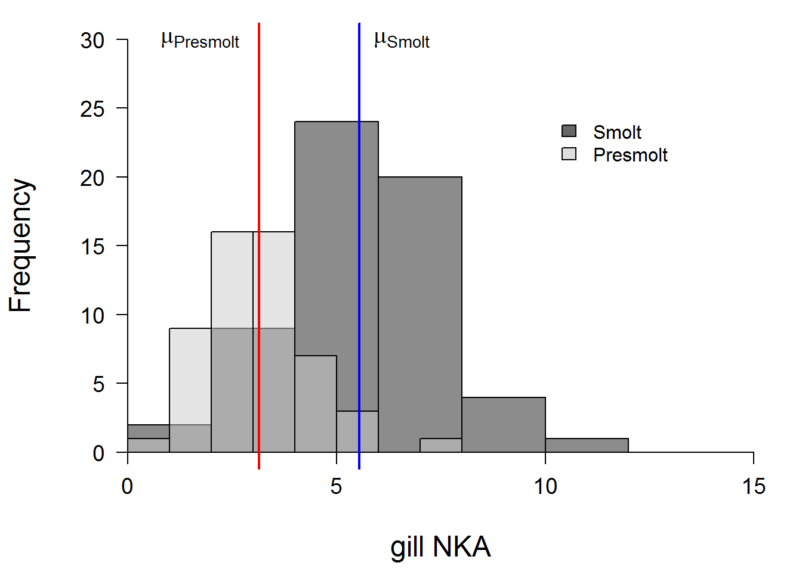

Inferential statistics

Introduction
The objective of this assignment is to help you formalize and test some simple hypotheses using basic statistical methods in R. This week we discussed questions we can ask with null hypothesis significance testing and the strengths and weaknesses of this approach. In this assignment, we will attempt to demonstrate some of those ideas while you become familiar with performing null hypothesis significance tests in R.
By the end of this lab, you should be able to: 1) formally state the null hypothesis that is being tested, as well as alternatives to the null; 2) conduct some basic statistical tests of those hypotheses; and 3) communicate the results of those tests with respect to the original hypothesis.
Exercises
The smolt data
This week we are going to work with a new dataset, called smolts. These data come from a lab experiment that examined differences in physiology, behavior, and survival of endangered, juvenile Atlantic salmon (Salmo salar) from the largest remaining population in the United States.
The Atlantic salmon is an anadromous fish that spawns in fresh water and grows in the ocean. After they hatch from their eggs in fresh water, juvenile salmon spend about 2 years growing in streams until they grow large enough to make the migration to ocean feeding grounds off the west coast of Greenland. During the spring before they make this migration, the fish undergoes a transformation known as ‘smolting’, which involves a complex suite of physiological, morphological, and behavioral changes. Notable among these changes is the increased ability to osmoregulate in salt water. This ability is enhanced by upregulation and increased expression of gill Na+,K+-ATPase (NKA), an enzyme used in active transport of ions. The activity of nka increases seasonally from low levels early in the run, to high levels in the peak of the run, and eventually decreases late in the run due to warming temperatures. We can use gill NKA activity as an indicator of the physiological development of smolts to assess optimal stocking times.
This study compared physiological measurements of smolts throughout the course of the migratory window to their preferences for salt water in laboratory experiments, as well as plasma osmolality and survival following exposure to full sea water. We used a two-chamber tank that allowed us to keep salt water in one compartment and fresh water in the other and we tracked fish behavior in the tank using high-end infrared cameras and sophisticated tracking software.
Let’s read in the data:
# Read in the data from comma-seperated text file
smolts = read.csv('smolts.txt')
# Look at the first few rows of data
head(smolts)
# Examine data structure
str(smolts)The dataset contains nine columns, or variables, defined as:
ID: This is the last five digits of a hexidecimal PIT tag code.
stage: classification into presumed early (Presmolt), middle (Smolt), and late (Postsmolt) parts of the run.
fl: the fork length of fish (mm)
mass: the mass of the fish (g)
nka: gill NKA activity for each fish prior to testing
osmolality: blood plasma osmolality following exposure to full sea waterpref: proportion of time spent in high salt water compartment of tank.
max: maximum continuous time spent in high salt water compartment tank.
n.switch: the number of times the fish moved between high salt water and low salt water compartments of the behavior tank.
One sample t-tests
Recall that with a one-sample t-test our objective is to determine whether or not a sample that we have taken deviates from the mean of a population of interest. We might be interested in this kind of question if we are trying to identify anomolous observations within a specific statistical or biological sample, or if we are trying to compare our data to literature values for which only a mean was reported. Remember that what we are doing statistically is to see whether or not the population mean is contained within the 95% confidence interval (CI) for the sampling distribution of our variable of interest.
First, we’ll make a couple of objects out of the data in the smolts dataframe
# Make a vector of smolt gill NKA activities
smolt.nka <- smolts$nka[smolts$stage=='Smolt']
# Quick summary of the data
summary(smolt.nka)
Min. 1st Qu. Median Mean 3rd Qu. Max.
0.531 4.346 5.577 5.551 6.886 10.543 # Make a vector of presmolt gill NKA activity
presmolt.nka <- smolts$nka[smolts$stage=='Presmolt']
# Another quick data summary
summary(presmolt.nka)
Min. 1st Qu. Median Mean 3rd Qu. Max.
0.378 2.406 3.111 3.146 3.631 7.779 Now let’s use these data to work out a simple example. Your objective is to compare nka activity of the stage Smolt to the sampling mean for gill NKA activity in the data set (4.16) using a one-sample t-test. You will need to choose an appropriate Type-I error rate (confidence level), and alternative hypothesis ahead of time in your analysis.
# If you have forgotten how to do this,
# you can look at the lecture page,
# or you can type:
?t.testQuestion 1. First, formally state the null hypothesis for this test. Then, state the alternative hypothesis that you chose. If you want to use greater or less realize that this refers to the argument x in the t.test function as compared to mu or y (depending on whether it is a one or two sample test).
Now, run the test.
Question 2. Does gill NKA activity of the stage Smolt differ significantly from the population mean? Report this along with:
The t-statistic, degrees of freedom, and p-value for the test
The mean nka for the Smolt stage
The confidence interval for this mean and state the confidence level in your answer (will depend on your choice of confidence level above)
Two-sample t-test
Now we will look at what you might think of as a more ‘standard’ application of the t-test. Here we are interested in comparing two sampling distributions from one or more biological populations to determine whether or not they come from the same statistical population. For this example:
First, test the assumptions of normality and equal variances.
# In case you forgot the functions:
# Shapiro-Wilk normality test
?shapiro.test
# Fisher's F test of equal variances
?var.test We can also plot the distributions of gill NKA for the smolt and presmolt stages to see if they look normal.
# Set plot margins using `par`
par(mar=c(4.5, 4.5, 1, 1))
# Make a histogram of smolt nka
# activity (smolt.nka). The rgb
# color function allows us to
# specify an alpha channel for
# transparency.
hist(x=smolt.nka,
col=rgb(red=0.1, green=0.1, blue=0.1, alpha = 0.5),
xlim = c(0,15), ylim=c(0,30),
main='',
xlab='gill NKA',
yaxt='n',
xaxt='n',
cex.lab=1.5
)
# Add a second histogram for presmolt
# nka activity (presmolt.nka)
# The argument 'add' lets us add this
# histogram to the first one.
hist(presmolt.nka,
col=rgb(0.8,0.8,0.8,0.5),
add=TRUE
)
# Add x and y axes (x=side 1, y=side 2)
axis(side=1, pos=0, cex.axis=1.15)
axis(side=2, pos=0, las=2, cex.axis=1.15)
# Add vertical (v) lines for the group means
abline(v=mean(smolt.nka), col='blue', lwd=2)
abline(v=mean(presmolt.nka), col='red', lwd=2)
# Add text labels for each of the means
# at the correct location. See the help
# file for `text` for clarification
text(x = mean(smolt.nka), y=30,
expression(paste(mu['Smolt'])),
adj=-.25, cex=1.25)
text(x = mean(presmolt.nka), y=30,
expression(paste(mu['Presmolt'])),
adj=1.25, cex=1.25)
# Add a legend to the plot
legend(x=10, y=25,
legend=c('Smolt', 'Presmolt'),
fill=c('gray40', 'gray87'),
col='black', bty='n') 
Question 3. Are the sampling distributions for gill NKA activity of smolts and presmolts normal based on the results of the Shapiro-Wilk test and the histogram above? Are the variances equal based on the F test?
Conduct a two-sample t-test to compare gill NKA activities between Smolt and Presmolt stages.
Question 4. State the null hypothesis for the test and the alternative hypothesis that you chose. Justify your choice of alternative.
Question 5. Did you specify the var.equal argument? If so, what did you choose and what was the corresponding degrees of freedom?
If you did not specify this argument, note that R made a choice for you on the fly, and you can tell what that choice was by the df. We discussed the df for the t-test in class. In the case of the two-sample test, the df should be calculated as \((n_1-1)+(n_2-1)\), or 111 in this case, if the variances are equal. If you ran the t.test with this assumption, go back and run it the other way and look at the df:
# Re-run the two-sample test
t.test(smolt.nka, presmolt.nka)
Welch Two Sample t-test
data: smolt.nka and presmolt.nka
t = 7.6894, df = 105.22, p-value = 8.247e-12
alternative hypothesis: true difference in means is not equal to 0
95 percent confidence interval:
1.784862 3.025163
sample estimates:
mean of x mean of y
5.551050 3.146038 Weird, huh? How do you get a part of a degree of freedom?? And, it looks like we are short a few degrees of freedom, doesn’t it? So, what’s happening here?
We have to sacrifice a few extra degrees of freedom to stay conservative and avoid making a Type-I error. So, we need to base the df on the means and variances of the two sampling distributions. Check out the calculation on this definitely not wrong and totally reliable Wikepedia page.
Wilcoxon test
Moving on to the next variable…don’t worry, we will come back to the gill NKA data next week when we talk about ANOVA, because I know you are all dying to know about the postsmolt group.
Here, we will continue to look at the presmolt and smolt life stages. First, create two vectors: the first should hold all values of the variable ‘osmolality’ for presmolts, and the second should hold all values of the variable ‘osmolality’ for smolts.
# In case you have forgotten
# the data strucure already:
str(smolts)Question 6. Do these sampling distributions conform to the normal distribution? Why or why not (note that there are multiple reasons).
Plot a histogram of the distributions. Can’t remember how to do this?
\(p(in the lecture module = 1.00)\)
Okay, now that you have plotted an awesome histogram to check distributional assumptions, use a Wilcoxon test to determine whether the sampling distributions differ from one another. Can’t remember how to do it? See the lecture module.
Question 7. Formally state the null hypothesis and the alternative that you chose. Justify your choice.
Question 8. Did you reject the null hypothesis or did you fail to reject? What was the Type-I error rate that you assumed for this test?
Question 9. Does this make biological sense based on the description of the dataset above? Does this make biological sense based on the results of the two-sample t-test above?
Make a boxplot of the variable ‘max’ by lifestage only for presmolts and smolts. NOTE: it may be helpful to make a seperate dataframe that does not contain postsmolts and then transform the variable ‘stage’ to character using tools we learned in previous labs. Call the dataframe smolts2 for ease below.
\(\chi^2\) frequency analysis
Last time we met, we conducted a \(\chi^2\) frequency analysis by hand. I will not make you do that here. I will not even make you calculate it in Excel, because here we can do it in a single line of code. Hopefully this makes the programming worthwile as a tool in your modeling toolbox.
Create a new column in your dataframe that ranks osmolality as high if it is >= 400 mosm, and low if it is < 400 mosm.
# Like this:
smolts2$rank[smolts2$osmolality>=400] <- 'high'
smolts2$rank[smolts2$osmolality<400] <- 'low'Conduct a \(\chi^2\) test to test for differences in the frequency of high and low osmolality between the presmolt and smolt stages. Use the reference script to extract the observed and expected values from the \(\chi^2\) test object.
Question 10. Okay, no surprises that the frequency of high and low osmolality differs between these given what we already knew. Use the observed and expected tables to describe the primary differences in frequencies between these two groups in your own words.
This work is licensed under a Creative Commons Attribution 4.0 International License. Data are provided for educational purposes only unless otherwise noted.